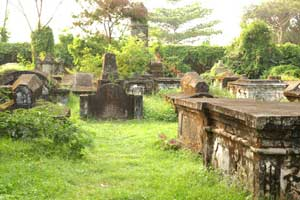

Ernakulam
Sprawling, residential Ernakulam is known for Marine Drive, a busy waterfront promenade
where boats offer backwater cruises. The Kerala Folklore and Hill Palace museums explore local heritage
through art and antiquities. Shops along Broadway and on MG Road sell fabrics, crafts, and spices, while
modern Lulu Mall also has a cinema and an ice rink. Simple eateries serve Keralan specialties and South
Indian seafood.
Places to Visit in Ernakulam
- Bolghatty Island.
- Bolghatty Palace.
- Cherai Beach.
- Fort Kochi.
- Dutch Cemetery.

The Bolgatty Island, is a historic town, in the commercial capital of Fort Kochi in Ernakulam. The main attraction here is the palace of the same name. This island is easily accessible from the mainland. India’s one and only international marina, the Kochi International Marina, is another important part of this island.

In the island of Bolgatty lies Kochi’s famous Bolgatty Palace. It is one of the oldest existing Dutch palaces in the world. It was built by the Dutch traders in the year 1744 and later was extended and gardens were landscaped around it. This was at that time the Governor’s palace for the commander of the Dutch Malabar. In the year 1909 it was leased out to the British, hence serving as the home of the British Governors. It was also the seat of the British Resident of Cochin during the British Raj. Later on in the year 1947, when India attained independence from the British, the palace became the state’s property and then later was converted into a heritage hotel resort. Now this palace has a swimming pool along with a 9 hole golf course and an ayurvedic centre.

Bordering the Vypeen island off Cochin is the lovely beach of Cherai. It is located about 25 kilometers away from Kochi and about 30 kilometers from Kochi International Airport at Nedumbassery. This beach is a popular tourist destination especially among the foreigners. The beach is less busy and cleaner as compared to many other beaches in Ernakulam district. Cherai beach is lined with Chinese fishing nets, coconut groves and paddy fields offering the perfect setting.

Get nostalgic and get back to the olden days at Fort Kochi, the commercial capital of Kerala. Fort Immanuel Thakur House David Hall Parade Ground, Bastion Bungalow Vasco Da Gama square Pierce Leslie Bungalow, Bishop's house etc are some of the major attractions of this place. Fort Kochi is one of the places in Kerala where you can get to see a diverse range of cultures. From Malayalis to Jews to Dutch, you can find traces of their culture here. The major highlight of this place is the Chinese Fishing nets, which can be seen, lined in the coastline. In all at Fort Kochi you can get to see modernity mixed with tradition. There is no other better option than to set off exploring on foot, for the true experience of Fort Kochi. To reach there one can take a bus or Ferry from the mainland of Ernakulam.

Forming an evidence of Kochi’s connection with the Dutch is the Dutch cemetery at Fort Kochi. It was sanctified in the year 1724 and till date contains almost 104 epitaphs and tombs, containing authentic details of the Dutch and British people buried there. Seeing all this, visitors who come here are reminded of the foreigners who came to Kochi so as to expand their empires. The St. Francis Church maintains the record of those who were buried here and the Church of South India (CSI) is who manages the cemetery. The tombs at this place are made out of granite and red laterite stones but do not have a cross. The inscriptions in each of the epitaph are in the Old Dutch script. No longer used, the last person to be buried here, according to the author TW Venn, was Captain Joseph Ethelbert Winckler, in the year 1913.